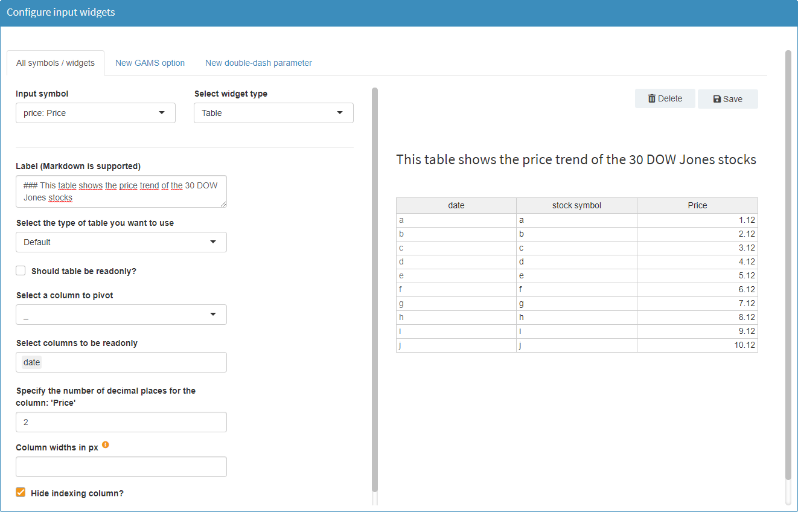
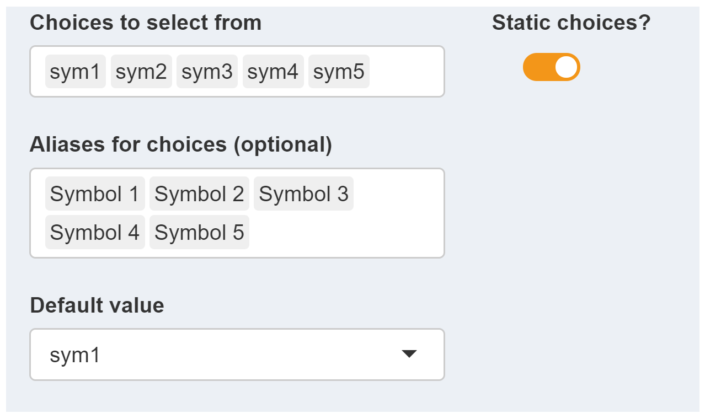
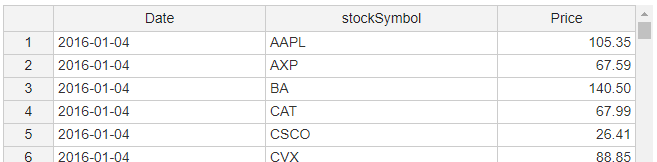
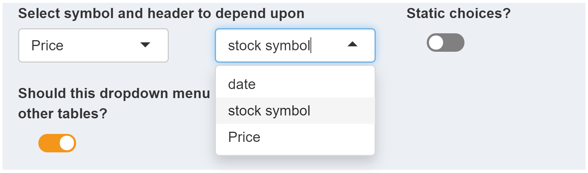
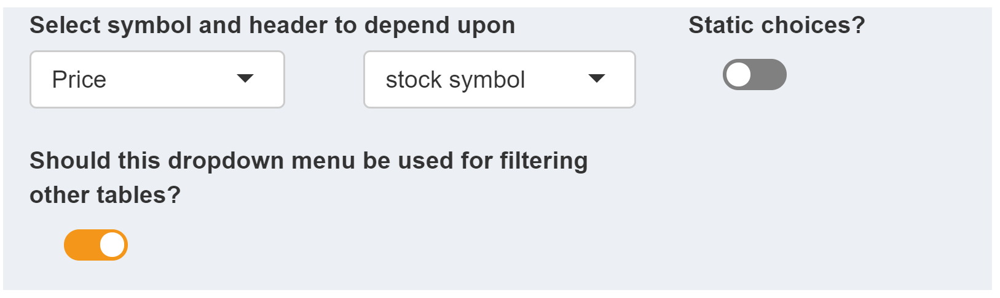
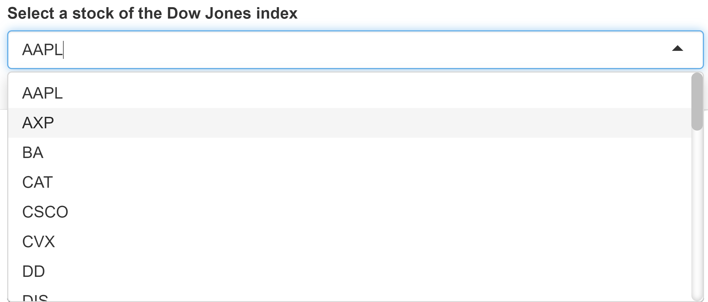
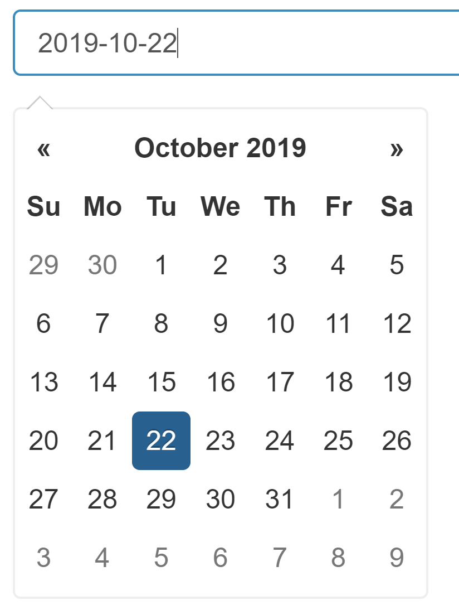
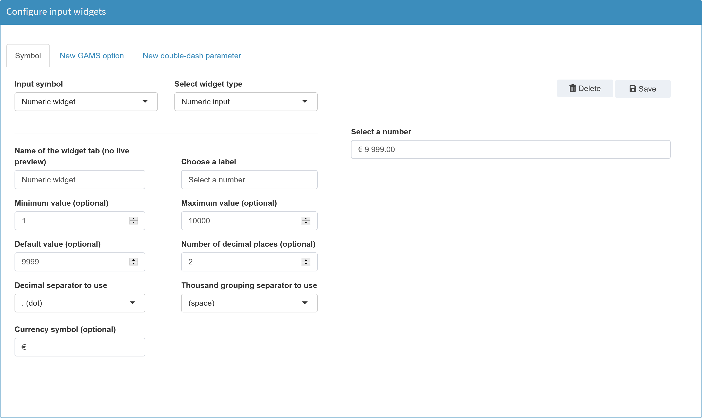

Instead of pivoting a single column, the MIRO pivot table can be used in case you want to interactively filter, pivot or aggregate columns.
Widgets
Table
Configuration
By default, every cell in an input table is editable and rows can be inserted and removed. If you only want to allow your users to edit certain tables or even only certain columns within a table, you can customize the table for the underlying GAMS parameter. You can also use a different type of table to enter your data. For example, if you have large amounts of data (>100,000 records) in your table, we recommend using either the Big Data Table or the pivot table. In addition, input tables can be annotated with Markdown syntax. This way you can give your users additional information, e.g. what kind of data should be entered here and in which format.

Available Options
Default table:
The following options are available for the standard (default) table in MIRO, which works similar to a spreadsheet.
Should table be read-only?
Select a column to pivot
This option allows you to pivot a table column of a symbol, i.e. to have a new column from each of the elements in this column:

Unlike the
table statement in
the GAMS model itself (Table symbolname;), this option does not affect the
data contract
between GAMS and MIRO. Hence, the columns of the symbol
remain variable, since the symbol itself is communicated
in list format. The pivoting of the configured column
then happens "live" in the MIRO application.
Variable columns do not only mean that the column
elements can change their names. It is also possible to
add or delete whole columns. On the GAMS model side,
this is equivalent to adding or deleting a set element
of the affected index.
Note:
When using the pivot option, note the following:
- The table columns displayed with the pivot option can no longer be sorted alphabetically or numerically.
- Furthermore, it is not possible to add or delete columns in the symbol table if it is either read-only or displayed as a heatmap.
Now let's look at a case where we should probably
avoid using this pivot functionality: For this we
look at the parameter
Price of the
Pickstock model:
Set date 'date'
symbol 'stockSymbol';
$onExternalInput
Parameter price(date,symbol) 'Price';
$offExternalInput
If we decide to pivot the set symbol, we would end up with a table where all stock symbols (AAPL, AXP, BA, etc.) are displayed in a separate column:

A table width quickly increases when the number of set elements of the header index gets large. A total of - for example - 30 stocks to be represented in a table would lead to 30 additional columns. In this case, the list view might be more clear.
Fix columns that are not pivoted?
Select columns to be readonly
This option prevents the user from making manual changes in selected columns of the input table. Note that this option is only available for table columns that have not been pivoted (see option above).

Column widths
Specify the number of decimal places for the column
Hide indexing column?
Turn table into a heatmap?
JSON example
Default input table with label, without index column, 'date' column is readonly.
{
"inputWidgets": {
"price": {
"widgetType": "table",
"tableType": "default",
"readonly": false,
"readonlyCols": "date",
"hideIndexCol": true,
"heatmap": false,
"label": "This table shows the price trend of the 30 DOW Jones stocks"
}
}
}
Big Data table:
The following options are available for the Big Data table. This table type is intended for situations in which large amounts of data are to be displayed within a table. Instead of a long, 1-page table, a multi-page table is displayed. Only the data currently visible on the client side is loaded in this table.
Should table be read-only?
Select a column to pivot

JSON example
Big data input table.
{
"inputWidgets": {
"price": {
"widgetType": "table",
"tableType": "bigdata",
"readonly": false,
"label": "This table shows the price trend of the 30 DOW Jones stocks"
}
}
}
MIRO Pivot Table:
The following options are available for the MIRO Pivot Table. This table type is also capable of handling large amounts of data (> 1 million records). It allows you to interactively filter, pivot or aggregate data. See here for more information about the MIRO Pivot Table. The configuration of this table can be done directly from the preview on the right side.
Note:
The MIRO Pivot Table has no concept of "order" because the table can be sorted interactively by changing the order of the rows. When you add or change UELs, they are always appended to the underlying data source. So when MIRO passes the data to GAMS, you cannot rely on the order of the elements coming from this table type. If you need UELs in a certain order, you should either use one of the other input table types or declare the sets you need sorted as additional external input (instead of using the implicit set definition).
JSON example
MIRO Pivot input table.
{
"inputWidgets": {
"price": {
"widgetType": "table",
"tableType": "pivot",
"options": {
"aggregationFunction": "sum",
"pivotRenderer": "table",
"enableHideEmptyCols": false,
"hideEmptyCols": false,
"rows": ["date", "symbol"]
},
"label": "This table shows the price trend of the 30 DOW Jones stocks"
}
}
}
Slider
Configuration
Sliders are useful in situations where the user has to select a numeric value from a range.
Example:

Available Options
The following options are available for a slider widget:
Enter the element name as it should be displayed in a tab
With this option the tab name of the symbol is defined, see screenshot below. The default value of the element name is the explanatory text of the symbol.
Note:
If all scalar widgets are displayed in the same tab (see aggregate widgets in the general options), then the name specified here is not displayed at all.

Choose a label
Tooltip (optional)
Minimum / maximum / default value
Minimum / maximum value: Both a minimum and a
maximum value are required for a slider. These define
the range from which the user can select values.
Default value: A default value is the
initial value of the slider i.e. the slider value set
when starting the application. This is optional. If the
value does not fall between the minimum and maximum
values, a warning is issued. If this value is not
specified, the minimum value is used as the default
value. As soon as data is loaded which contains a value
for the slider symbol, the slider is set to that value.
All three parameters can be set either statically or dynamically. If the range of the slider is independent of the data loaded, it is a good idea to configure it as a static slider. This means, for example, that the lower and upper limits of a slider are always 1 and 10. Scenario data does not change these.
Dynamic limits:
Sometimes it
makes sense to adapt the limits to the data. An example
for this can be found in the demo model
pickstock. Here, two sliders are used. With one
of the sliders, the user can select the
maximum number of stocks, with the other one the
number of training days.

In both sliders the maximum value - the upper limit - results from the input data of the parameter Price.

The maximum value for the
maximum number of stocks is 30, since the data
set Price that is currently loaded contains 30
stocks. If the user deletes e.g. all values of the stock
AAPL from the data, the maximum value of the
slider changes to 29. The same is true for the second
slider: the number of training days. Here the
maximum value of 252 results from the number of
available dates in price.
In the
Configuration Mode we can easily define such dynamic
limits. For the first slider the configuration looks as
follows:

The Static value? box is unchecked for the maximum value. Since the maximum slider value should result from the data of the symbol price, the corresponding header stock symbol in which the stocks are contained is selected (see table above). The operator is set to count since we want to count all stock symbols in our data to set the maximum value.
For the calculation of such limits from the data, the following operators are available:
More on Dependencies among widgets can be found here.
Step size
The step size specifies the interval between each selectable value on the slider. The value must be greater than 0 and must not exceed the total range of the slider.

Minimum step size
Show tick marks?
Should element be expanded automatically when submitting a Hypercube job?
As explained in detail in the corresponding chapter, widgets will be expanded when submitting a Hypercube job. With the option available here, the automatic extension of a widget can be switched off. The picture below shows extended widgets.

JSON example
Slider with dynamic upper bound.
{
"inputWidgets": {
"maxstock": {
"label": "Select the maximum number of stocks",
"tooltip": "This is a tooltip",
"min": 1,
"default": 3,
"step": 1,
"max": "card(price$symbol)",
"alias": "maximum number of stocks to select",
"widgetType": "slider"
}
}
}
Range slider
Configuration
A range slider returns two numeric values. For this reason, such a slider is not suitable for GAMS scales, but only for GAMS command line parameters, i.e. double-dash parameters.
Example:
In the Configuration Mode we define a double-dash parameter --range with the bounds 1 and 100. The lower default value shall be 42 and the upper default value 75:

In the GAMS model we can access the selected range with
%RANGE_LO% for the
lower value and
%RANGE_UP% for the
upper value.
More on widgets with ranges can be found here.
Range sliders for Hypercube jobs
A range slider in Base Mode becomes a range slider with an additional checkbox when submitting a Hypercube job:

With this checkbox you can determine if the selected range of the slider should result in a single scenario (All combinations? unchecked) or if all possible combinations within this range should be used (All combinations? checked). In the example above - All combinations? is checked - the selected step size determines which scenarios are generated for the Hypercube job. With a step size of 5 this would result in 10 different symbol ranges / scenarios:
- 75 - 90
- 80 - 90
- 85 - 90
- 90 - 90
- 75 - 85
- 80 - 85
- 85 - 85
- 75 - 80
- 80 - 80
- 75 - 75
An unchecked All combinations? would result in a single scenario. In this scenario, the symbol would have a range from 75 to 90.
Available Options
The available options of a range slider are identical to those of a normal slider. The only difference is that instead of a single default value, two of these values need to be specified.
JSON example
Note: In order for MIRO to recognize whether the symbol is a double dash parameter or a GAMS option, they are prefixed with either _gmspar_ for double dash parameters or _gmsopt_ for GAMS options.
{
"inputWidgets": {
"_gmspar_range": {
"widgetType": "slider",
"alias": "Range",
"min": 1,
"max": 100,
"default": 42,
"step": 1,
"ticks": false,
"noHcube": false,
"label": "Select a range",
"tooltip": "This is a tooltip"
}
}
}
Checkbox
Configuration
A checkbox returns 0 or 1 and is therefore suitable for use in binary decisions.
Example:
Configuration of a GAMS Scalar binaryDecision as a checkbox:
$onExternalInput
Scalar binaryDecision 'binary decision' / 0 /;
$offExternalInput

Available Options
The following options are available for a checkbox widget:
Enter the element name as it should be displayed in a tab
Choose a label
Tooltip (optional)
Default value
Should element be expanded automatically when submitting a Hypercube job?
JSON example
{
"inputWidgets": {
"_gmsopt_keep": {
"widgetType": "checkbox",
"alias": "Keep",
"label": "Keep process directory?",
"value": 1,
"noHcube": true,
"class": "checkbox-material",
"tooltip": "This is a tooltip"
}
}
}
Dropdown menu
Configuration
Besides normal GAMS scalars, a dropdown menu can also be used for singleton sets. Unlike scalars, singleton sets can have a label and an element text instead of a numeric value. What is specified as choices when configuring the dropdown menu is communicated as the element label between MIRO and GAMS. The alias assigned to the dropdown choice defines the element text in the model. Read more about Singleton Sets in MIRO here.
Example:
Dropdown menu for a Singleton Set with model types as choices:

The model type for which the dropdown menu is configured, is a GAMS Singleton Set (symbol name: typeSelect):
Set t 'Available model types' / lp, mip, minlp /;
$onExternalInput
Singleton Set typeSelect(t) 'model type' / lp /;
$offExternalInput
[...]
$eval.Set type typeSelect.TL;
solve transport%type% using %type% minimizing z;
The value of the singleton set which comes from MIRO is stored in the compile-time variable type by using the Dollar Control Option eval.Set. This can then be used (in compile time) to run the desired model.
Tip:
If you configure a dropdown menu and you want a choice to be nothing, use the symbol "_" as a choice. MIRO treats an underscore internally as if nothing is set.
Tip:
Similar to the dynamic limits of a slider, the selectable options of a dropdown menu can be filled dynamically, depending on the loaded data.
Available options
The following options are available for a checkbox widget:
Enter the element name as it should be displayed in a tab
Choose a label
Tooltip (optional)
Static Choices / dynamic choices
As with a slider, the values/elements of a dropdown menu can be filled either statically or dynamically. Static choices remain unchanged, regardless of the loaded data. In contrast to this the selectable elements of a dropdown menu with dynamic choices are filled depending on the loaded data.
Static choices:
For a static dropdown menu the following options are available:
-
Choices to select from:
Here, a list of values to select from in the resulting dropdown menu is specified. -
Aliases for choices:
If aliases are given, then an alias rather than the choice is displayed to the user. Aliases are optional. The choice-alias mapping follows the order in which the elements are specified. If aliases are given, the number of aliases must match the number of choices. -
Default value:
The default value specifies the initial selection of the dropdown menu. This option is only available for static dropdown menus.
Example: Configuration of a dropdown menu with static choices:

The user then gets the following dropdown menu:

Dynamic choices:
In the following example a dropdown menu with dynamic choices is configured in the model Pickstock for a Singleton Set:
$onExternalInput
Singleton Set stock 'stock' / AAPL /;
$offExternalInput
The dropdown menu should always contain all stocks that are included in the existing data. Note that this example is not part of the Pickstock demo model.
The following options are available when using dynamic choices.
-
Select symbol and header to depend upon:
If the selection options of a dropdown menu are to be filled dynamically, the set from whose elements the choices are to be derived must be specified. For this purpose, those symbols are available which are used as input symbols in MIRO (i.e. those symbols which were tagged with$onExternalInput/$offExternalInputin the GAMS model). In this example the symbol Price is used, which contains all stocks: Tip:
Tip:Instead of a single symbol, all input symbols whose domain the selected set is part of can be used to fill the drop-down menu with data. To do this, simply remove the selected symbol. An All is shown then:

Next, we specify the column of the symbol Price where the data for the drop-down menu should come from. Since we are interested in the individual stocks, we select the column stock symbol.
Note:Only unique elements of a column are extracted. If an element is contained more than once in the selected column, duplicate entries are removed.
Note:Only those headers / columns that contain set elements of the selected symbol can be specified. Value columns cannot be used to fill the dropdown choices.
These two options are sufficient to dynamically fill the choices of the dropdown menu.
-
Should the symbol table(s) be filtered depending on
the selection in the dropdown menu?:
This option is optional.When active, it has the following effects: The user selects a stock in the dropdown menu (e.g. AAPL).This has the consequence that all tables containing stock symbols are filtered according to this selection. Only those rows with AAPL are displayed: Tip:
Tip:The filter is used exclusively for visual support. A table filtered in this way is always transferred to the GAMS model as a whole, i.e. unfiltered, regardless of what is currently displayed in the interface.
Communicate as element text with GAMS?
Should element be expanded automatically when submitting a Hypercube job?
JSON example
Static dropdown menu:
{
"inputWidgets": {
"type": {
"widgetType": "dropdown",
"alias": "model type",
"choices": ["lp", "mip", "minlp"],
"aliases": ["LP", "MIP", "MINLP"],
"selected": "lp",
"noHcube": false,
"clearValue": false,
"multiple": false,
"label": "Select the model type",
"tooltip": "This is a tooltip"
}
}
}
Multidropdown menu
Configuration
Note:
A multi-dropdown menu can only be used for one-dimensional, dynamic sets.
Example: Model Pickstock. We define a new dynamic
set subdate(date). In MIRO we want to fill the
elements of subset via a multi-dropdown menu.
Set date 'date'
symbol 'stock symbol';
$onExternalInput
Parameter price(date<,symbol<) 'Price';
$offExternalInput
[...];
$onExternalInput
set subdate(date) 'subset of dates' /2016-01-04/;
$offExternalInput
In the Configuration Mode we can configure a multi-dropdown menu for symbol subdate:

Note:
The only difference between configuring a single and a multi-dropdown menu is the checkbox Should multiple items be selectable?.
Note that we do not use static choices for the dropdown menu but fill the choices with all dates of the symbol price. Furthermore, we activate the option that the table of symbol price shall be filtered based on the user's selection in the dropdown menu of subdate. This means that if the user selects one or more dates in the dropdown menu, only the entries containing these dates are visible in the Price table. More information on dependencies among widgets can be found in the options of a dynamic dropdown menu and here.
In the MIRO application the result of this configuration looks like this:

Available options
The available options of a multidropdown menu are identical to those of a single dropdown menu. The only exception is that the option to communicate the value as element text with GAMS cannot be set for a multi-dropdown menu.
JSON example
{
"inputWidgets": {
"subdate": {
"widgetType": "dropdown",
"alias": "subset of dates",
"selected": "",
"noHcube": false,
"multiple": true,
"label": "Select dates",
"tooltip": "This is a tooltip",
"choices": "$price$date$"
}
}
}
Date selector
Configuration
Returns a date string in the format yyyy-mm-dd.
Example:
Date selector for Singleton Set singleDate:
$onExternalInput
Singleton Set singleDate 'single date' / 2016-01-01 /;
$offExternalInput

Available options
The following options are available for a date selector widget:
Enter the element name as it should be displayed in a tab
Choose a label
Tooltip (optional)
Default / earliest / latest date
Choose how you want the date to be formatted
What date range should be displayed per default?
What day shall be the start of the week?
This option determines the day of the week with which each line of the date overview should begin.
Start on Sunday:

Start on Monday:

Select weekdays that you want to disable
Should datepicker be closed immediately when a date is selected?
Should element be expanded automatically when submitting a Hypercube job?
As explained in detail in the corresponding chapter, widgets will be expanded when submitting a Hypercube job. With the option available here, the automatic extension of a widget can be switched off.
JSON example
{
"inputWidgets": {
"singledate": {
"widgetType": "date",
"alias": "single date",
"format": "yyyy-mm-dd",
"startview": "month",
"weekstart": 0,
"autoclose": true,
"noHcube": false,
"label": "Select a date",
"tooltip": "This is a tooltip",
"value": "2016-01-01",
"min": "2016-01-01",
"max": "2017-01-01"
}
}
}
Daterange selector
Configuration
Returns two dates. For more on widget ranges, see here.
Example:
Date range selector for double-dash parameter date:

Available options
The available options of a date range selector are almost identical to those of a date selector. The following options are available in addition to a date selector:
Default dates
Since the widget is used for date ranges the date range selector needs two default dates instead of one. The configuration of these does not differ from that of the standard date selector.

Select the separator between start and end date selector
With this option you can determine what should be displayed between the two date selectors (default: "to").
Example with two different separators:
JSON example
{
"inputWidgets": {
"_gmspar_date": {
"widgetType": "daterange",
"alias": "date range",
"format": "yyyy-mm-dd",
"startview": "month",
"weekstart": 0,
"separator": " to ",
"autoclose": true,
"noHcube": false,
"label": "Select a time range",
"tooltip": "This is a tooltip",
"start": "2020-01-01"
}
}
}
Text input
Configuration
Returns the entered text.
Example:
Text input for double-dash parameter comment:

Available options
The following options are available for a text input widget:
Enter the element name as it should be displayed in a tab
Choose a label
Tooltip (optional)
Choose the default value
Choose a placeholder
Communicate as element text with GAMS?
Text input and Singleton Sets:
If a text input is used for a Singleton Set and you want to communicate both its label and its element text via GAMS MIRO, you must use a double pipe ('||') as separator:
Find more information here.
JSON example
{
"inputWidgets": {
"_gmspar_comment": {
"widgetType": "textinput",
"alias": "Comment",
"value": "",
"placeholder": "e.g. \"experimental run\"",
"label": "Insert a comment",
"tooltip": "This is a tooltip"
}
}
}
Numeric input
Configuration
Returns a number.
Example:

Available options
The following options are available for a numeric input widget:
Enter the element name as it should be displayed in a tab
Choose a label
Tooltip (optional)
Default value
Minimum value
Maximum value
Number of decimal places
Decimal separator to use
Thousand grouping separator to use
Currency symbol
JSON example
{
"inputWidgets": {
"maxstock": {
"widgetType": "numericinput",
"alias": "maximum number of stocks to select",
"value": 4,
"min": 0,
"max": 30,
"sign": null,
"label": "Select the maximum number of stocks",
"tooltip": "This is a tooltip"
}
}
}